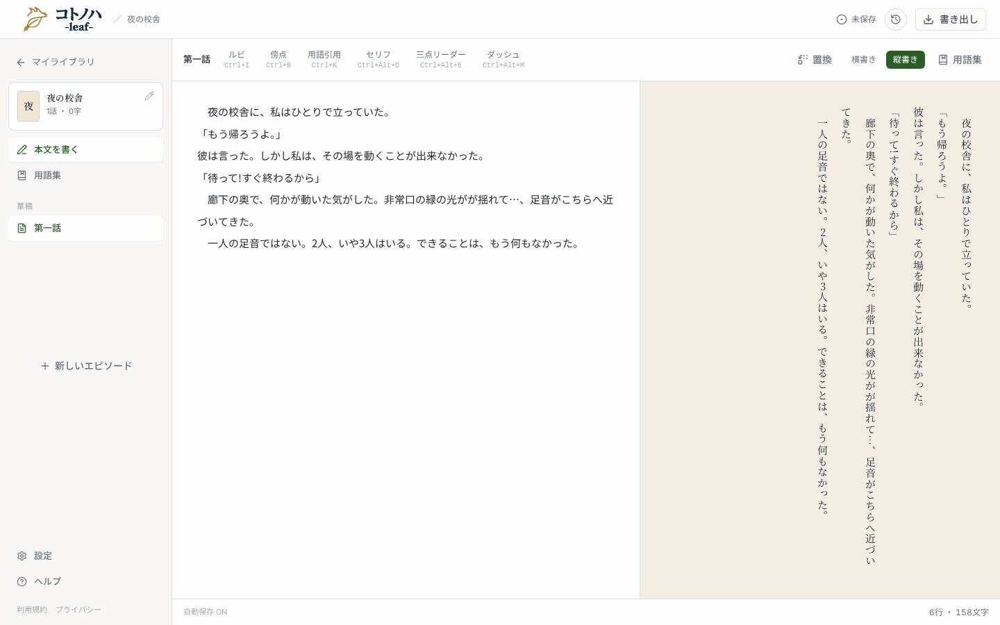
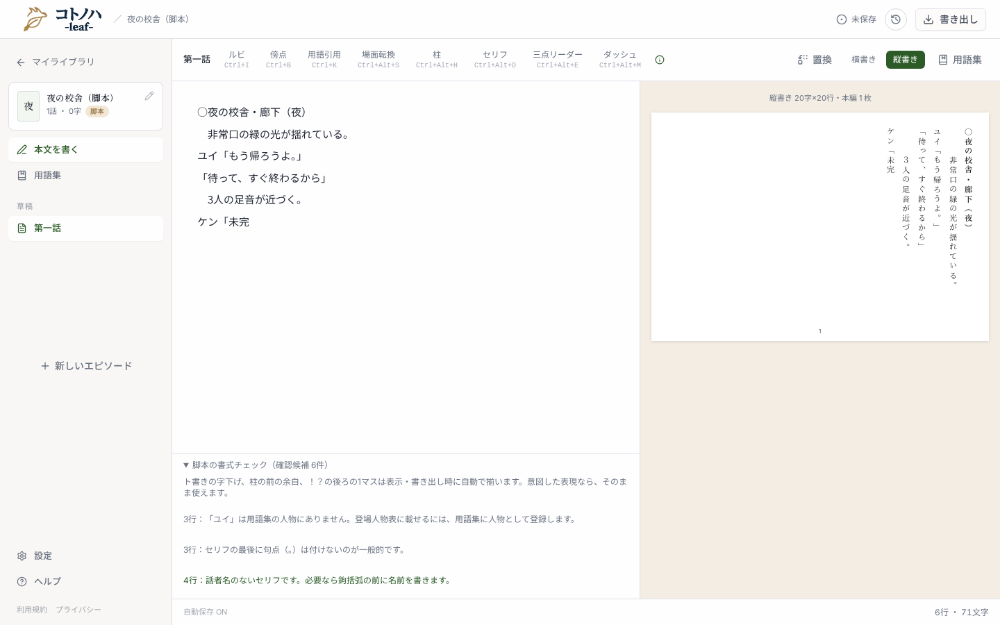
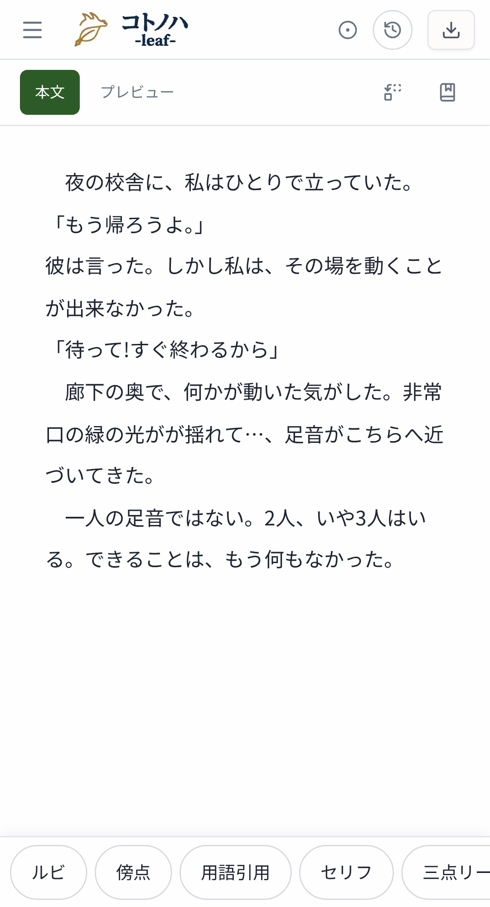

小説のエディタ下部に、脚本の「書式チェック」と同じ見た目で「推敲チェック」を足します。候補は押すと該当行を選択し、項目はオフにできます。番号は design.md「UI」節の変更点に対応します。

screens/editor-novel-desktop.png — 小説では本文の下に何も出ない

screens/editor-script-desktop.png — 流用する見た目（脚本の書式チェック）
2 原稿の作法と表記ゆれの確認候補です。本文は自動で書き換えません。意図した表現なら、そのまま使えます。
4 候補を押すと 5 本文の該当行が選択されます（モックでは行をハイライト）。項目の切替は localStorage に残り、作品をまたいで効きます。

screens/editor-novel-mobile.png（脚本の例は screens/editor-script-mobile.png）
原稿の作法と表記ゆれの確認候補です。本文は自動で書き換えません。意図した表現なら、そのまま使えます。
本文にフォーカス中は記法バーが下端を覆う（現状の脚本と同じ）。候補を押すとフォーカスが戻る。